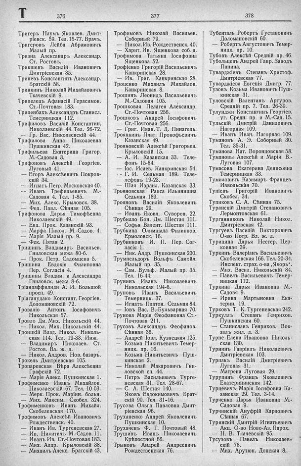

Лист источника 476
Скан

Распознанный текст
T
376
Тригеръ Наумъ Яковлев. Дмит-
ріевск. 59. Тел. 15-77. Врачъ.
Тригеровъ Лейба Абрамовичъ
Малый пр.
Тризна Александръ Александр.
Ст. Ростовъ.
Трикшевъ Василій Ивановичъ
Дмитріевская 85.
Триневъ Константинъ Александр.
Братскій 58.
Тринкинъ Николай Михайловичъ
Ткачевскій 9.
Трипелецъ Афанасій Герасимов.
Ст.-Почтовая 183.
Трипенбахъ Александръ Станисл.
Темерницкая 112.
Трифиловъ Василій Константин.
Николаевскій 44. Тел. 26-72.
— Гр. Вас. Николаевскій 44.
Трифилова Анна Николаевна
Пушкинская 42.
Трифильева Екатерина Григор.
М.-Садовая 3.
Трифоновъ Алексѣй Георгіев.
Луговый 41.
— Егоръ Алексѣевичъ Покров-
скій 34.
— Игнатъ Петр. Московская 40.
— Иванъ Трефильевичъ М.-
Садовая 4. Тел. 1-85.
— Мих. Алекс. Крыловск. 38.
— Фед. Павл. Сѣнная 105.
Трифонова Дарья Тимофѣевна
Николаевскій 49.
— Евд. Прок. Казанскій 93.
— Марфа Никол. М.-Садов. 4.
— Марія Малый пр. 9.
— Фек. Пятая 2.
Тришинъ Владимиръ Васильев.
Гниловская межа 80-б.
— Прок. Петр. Садомцева 5.
Тришина Евдокія Филиповна
Пер. Согласія 4.
Тришины Владим. и Александра
Гниловск. межа 8-б.
Тріандаффилиди А. И. Большой
просп. 49.
Тріаганудако Констант. Георгіев.
Доломановскій 72.
Троваліо Антонъ Іосифовичъ
Никольская 57.
Тровло Дм. Мих. Никольскій 44.
— Никол. Мих. Никольскій 44.
Троицкій Влад. Никол. Николь-
ская 114. Тел. 19-33. Инж.
— Владимиръ Николаев. Ст.
Ростов. Вл. ж. д.
— Никол. Алдров. Нов. базаръ.
Трокель Дмитріевская 105.
Тропаревская Вѣра Алексѣевна
Графскій 72.
— Марія Алекс. Пушкинская 1.
Трофименко Иванъ Михайлов.
Николаевскій 67. Тел. 10-03.
— Мерк. Прок. Маріин. больн.
— Мих. Максим. Скобел. 324.
Трофименковъ Иванъ Михайл.
Скобелевская 170.
Трофимовъ Алексѣй Ивановичъ
Рождественск. 40.
— Иванъ Ив. Тургеневская 27.
— Ив. Никитичъ М.-Садов. 11.
— Иванъ Ив. Ст.-Почтовая 183.
— Мих. Алдр. Крыловскій 38.
— Михаилъ Алекс. Братскій 43.
377
Трофимовъ Николай Васильев.
Соборный 79.
— Никол. Ив. Рождественск. 40.
— Харит. Ив. Ященкова соб. д.
Трофимова Татьяна Іосифовна
Ященкова 52.
Трофіенко Григорій Васильевичъ
Канкринская 28.
— Ив. Григ. Канкринская 28.
Троценко Михаилъ Михайлов.
Канкринская 8.
Трошинъ Леонидъ Васильевичъ
М.-Садовая 105.
Трошковая Пелагея Александр.
Ст.-Почтовая 256.
Трошковъ Андрей Іосифовичъ
Ст.-Почтовая 256.
— Григ. Иван. Т. Д. Пинагель.
Троянкинъ Плат. Прокофьевичъ
Казанская 49.
Трояновскій Алексѣй Григорьев.
Крыловскій 15.
— А. И. Казанская 33. Теле-
фонъ 15-84.
— Іос. Исаев. Канкринская 54.
— Г. И. Седьмая 189. Теле-
лефонъ 19-23.
— Шая Израил. Казанская 33.
Трояновская Раиса Ильинишна
Седьмая 189.
Трояновъ Василій Яковлевичъ
Сѣнная 29.
— Иванъ Яковл. Суворов. 22.
Трубилло Бон. Дм. Шестая 111.
— Софья Валент. Шестая 111.
Трубкина Олимпіада Филиппов.
Ермоловск. 16.
Трубниковъ И. П. Пер. Сог-
ласія 1.
— Ник. Алдр. Пушкинская 230.
Трумпельдоръ Вольфъ Самойл.
Малый пр. 35.
— Сам. Вульф. Малый пр. 35.
Тел. 16-44.
Трунинъ Иванъ Николаевичъ
Никольская 194-б.
Труновъ Иванъ Васильевичъ
Темерницк. 37.
— Игнатъ Платон. Седьмая 84.
— Іовъ Вас. В.-Бульварная 70.
Трунова Марія Ѳеофановна Ст.-
Почтовая 211.
Трусовъ Александръ Феофанов.
Сѣнная 36.
— Андрей Іовл. Кузнецкая 125.
— Козьма Никитьевичъ Темер-
ницк. пр. 16.
— Козьма Никитьевичъ Пуш-
кинская 2.
— Николай Макаровичъ Гни-
ловской сп. 44.
— Петръ Васильевичъ Турге-
невская 31. Тел. 28-67.
— С. А. Шестая 140.
Яковъ Евдокимовичъ Брат-
скій 90. Тел. 31-16.
Трусова Ольга Павловна Дмит-
ріевская 96.
Труханенко Андрей Яковлевичъ
Пушкинская 10.
Трухачевъ Ф. Г. Почтовый 48.
Трушинъ Иванъ Николаевичъ
Крѣпостной 66.
Трыновъ Андрей Андреевичъ
Рождественская 76.
378
Тубенталь Робертъ Густавовичъ
Доломановскій 60.
— Робертъ Августовичъ Темер-
ницк. пр. 10.
Тубовъ Алексѣй Средній пр. 46.
Тубольцевъ Андрей Гавр. Заводъ
Панина.
Туварджіевъ Степанъ Христоф.
Дмитріевская 77.
Туварджіева Евгенія Дмитр. 77.
Тузовъ Козьма Ивановичъ Пуш-
кинская 31.
Туловскій Валентинъ Артуров.
Средній пр. 7. Тел. 26-39.
Тулунджи Константинъ Георгіев.
уг. Средн. пр. и М.-Сад. 15.
Тульскій Дмитрій Даниловичъ
Нагорная 109.
— Иванъ Иван. Нагорная 109.
Тумановъ А. Э. Соборный 30.
Тел. 35-31.
Туманова Нат. Воронцовская 58.
Тумановы Алексѣй и Марія В.-
Луговая 107.
Тумасова Екатерина Денисовна
Темерницкая 33.
Тумиловичъ Казимиръ Францев.
Извольская 70.
Тупіевъ Григорій Ивановичъ
Скобел. 34.
Тупиковъ С. А. Сѣнная 75.
Туранскій Дмитрій Степановичъ
Лермонтовская 61.
Турганниковъ Николай Никол.
Дмитріевская 42.
Тургуевъ Василій Викторовичъ
О-во Потр. Вл. ж. д.
Турицина Дарья Нестер. Цер-
ковная 39.
Туркинъ Валеріанъ Васильевичъ
Скобелевская 166. Тел. 20-34.
Инспект. страх. о-ва „Якорь“.
— Мих. Васил. Никольскій 84.
— Павелъ Васильевичъ Темер-
ницкая 112.
Туркина Дарья Ивановна М.-
Садовая 9.
— Ирина Мартыновна Ека-
терин. 19.
Турковъ Т. К. Тургеневская 242.
Туркуллъ Степанъ Генрихов.
Пушкинская 60.
— Станиславъ Генрихов. Вок-
залъ жил. д. 3.
Турне Елена Ивановна Николь-
ская 130.
Турнинъ Гавріилъ Николаевичъ
Дмитріевская 103.
Турпакъ Василій Дмитріевичъ
Луговая 31.
— Матрена Луговая 29.
Турупинъ Францъ Яковлевичъ
Екатерининская 142.
Турцевичъ Марія Іосифовна Ка-
занская 29. Тел. 3-14.
Турченко Дарья Ивановна М.-
Садовая 9.
Турчинскій Ануфрій Карловичъ
Сѣнная 67.
Турянскій Дмитрій Игнатьевичъ
Акц. О-во Ново-Аз. Парох.
— Н. В. Ткачевскій 95.
Тусузовъ Павелъ Николаев-
скій 78.
— Мих. Арутюн. Донская 8.